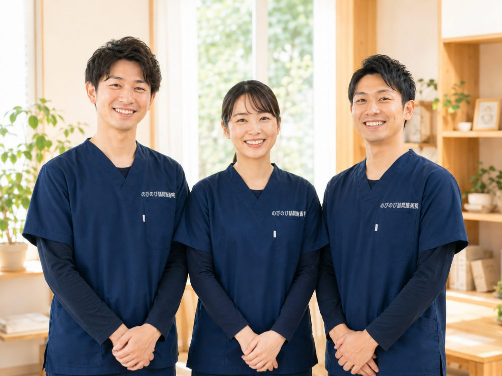

立ち上がると頭がふらつく、ふわふわして足元が定まらない、振り向いた拍子にぐらつく。年齢を重ねると、こうしためまいやふらつきに悩む方が増えます。転ぶのが怖くて動きたくない、けれど動かないでいると足腰が弱る。ご本人もご家族も、その板ばさみで不安を抱えがちです。ここでは、まず見過ごしてはいけない受診のサインを先にお伝えし、そのうえで、原因が落ち着いた慢性的な不調に訪問という形でどう向き合えるかをまとめます。
この記事のポイント
めまい・ふらつきは、原因の見極めが何より医療の役割です。急な激しいめまいや、ろれつの乱れ・手足の力が入らない・激しい頭痛などをともなうときは、脳の病気などが隠れていることがあり、すぐに救急や医療機関へ。鍼灸がお手伝いできるのは、原因がはっきりして落ち着いた慢性的なこわばりや、めぐり・自律神経の乱れをやわらげる補助の部分です。ご負担は1回3,950円のうち1割の方で約395円。この費用は介護保険の区分支給限度額とは別に計算します。対応は大阪府北部・大阪市の一部と尼崎市・伊丹市で、ご自宅にうかがいます。
めまい・ふらつきは、まず原因をはっきりさせるところから
ひとくちにめまいと言っても、その裏にあるものは実にさまざまです。耳の奥にある平衡感覚の器官の不調で起きることもあれば、脳の血管のトラブルが隠れていることもあります。血圧の変動や飲んでいる薬の影響、貧血が関係している場合もめずらしくありません。原因によって対処がまったく変わってくるため、どこに問題があるのかを見極めるのは医療機関の役割です。立ち上がったときに血圧が下がってふらつくタイプについては「立ちくらみ・起立性低血圧でふらつく方へ｜在宅でのケア」でくわしく書いています。
ですから順番として、まずは受診して原因をはっきりさせること。これが何より先です。私たち施術者は体に触れて首肩の状態を確かめることはできますが、めまいの原因を診断することはできません。かかりつけの医師や、耳鼻科・脳神経内科などで一度きちんと診てもらったうえで、慢性的に続く肩こりや体の支えの弱さに対して鍼灸・マッサージがお手伝いできることがある、という位置づけになります。
こんなめまいは、ためらわずに救急・受診を
ふだんと様子が違うめまいには、急を要するものがあります。何の前触れもなく突然、経験したことのない激しいめまいに襲われた。手足の片側がしびれる、力が入らない。ろれつが回らず言葉が出にくい。強い頭痛を伴う。ものが二重に見える。こうした症状が一緒に出ているときは、脳の血管の病気が起きている可能性があります。様子を見ずに、すぐ医療機関へ連絡してください。
ぐるぐると回るようなめまいに耳鳴りや聞こえにくさが重なる場合も、放っておかず受診をおすすめします。判断に迷ったら、まず医療につなぐ。この線引きだけは、ご本人にもご家族にも覚えておいてほしいところです。
鍼灸・マッサージにできること、できないこと
先にはっきりお伝えしておきます。鍼灸・マッサージは、めまいそのものを治す施術ではありません。病気を治すものではなく、効果には個人差があります。ここを曖昧にしたまま「めまいに効く」とうたうつもりはありません。
では何ができるのか。ひとつは、首や肩にたまった強いこりや緊張をやわらげることです。首まわりが板のように硬くなっていると、頭の位置を保つ働きにも負担がかかり、ふらつく感覚と重なって出てくることがあります。もうひとつは、ふらついても転ばない体を保つための手伝いです。下半身を含めて、体を支える力が落ちないように働きかけていく。めまいを消すのではなく、めまいが起きても踏みとどまれる余力を残しておく、という考え方です。
高齢の方にとって、転倒がなぜ怖いのか
若い頃なら、ふらついて尻もちをついても笑い話ですみます。けれど年齢を重ねると、その一度の転倒が骨折につながり、骨折をきっかけに寝たきりへと進んでしまうことがあります。動けない時間が続けば筋力はさらに落ち、体を起こすことすら難しくなる。この流れを、なんとか手前で止めておきたいのです。
すでに起き上がりや立ち上がりがつらくなっている場合は「起き上がり・立ち上がりがつらい高齢のご家族へ」に、筋肉が落ちていくこと自体を防ぐ話は「サルコペニアとロコモを防ぐ在宅ケア」で詳しくご紹介しています。
実際、転んで背骨を圧迫骨折してしまう方は多く、その後のケアには時間がかかります。背骨の圧迫骨折後の過ごし方については「背骨の圧迫骨折後のケア」でも触れています。脳梗塞や脳出血のあとに手足の動きにくさが残ると、めまいと相まって転びやすくなることもあり、こうした場合のケアは脳梗塞・脳出血の後遺症のケアで詳しくお話ししています。転倒を防ぐという地味な積み重ねが、その先の暮らしを大きく左右します。
下半身の支えと、立ち上がりのひと呼吸
ふらつきが出やすい場面には、ある程度の傾向があります。椅子や布団から立ち上がった瞬間、頭がふうっと軽くなる。夜中にトイレへ向かうとき、暗がりで足元が定まらない。お風呂上がりのぼんやりした時間。こうした「動き出しの一瞬」に体が追いつかず、よろけてしまうのです。
ここで効いてくるのが、体を下から支える太ももやお尻、足首まわりの力です。この土台がしっかりしていれば、多少ふらついても膝で踏ん張って持ちこたえられます。施術では、こうした下半身の筋肉が固まって動きにくくなっていないかを確かめ、負担にならない程度にほぐし、動かしていきます。あわせて、立ち上がるときはひと呼吸おいてから、夜間は手すりや家具に手を添えて、といった暮らしのなかの工夫もお伝えします。派手なことではありませんが、こうした一つひとつが転倒を遠ざけます。
訪問だからこそ、めまいのある方に向いている
めまいを抱えている方にとって、施術を受けに出かけること自体が転倒のリスクになります。玄関の段差、駅の階段、揺れる乗り物。通う道のりに危険がいくつもあるわけです。ご自宅にうかがう形なら、その移動そのものがなくなります。
もうひとつ、横になったまま受けられるのも訪問の利点です。施術のあいだ体を起こす必要がないので、途中でふらついて困る心配が少なくてすみます。終わったあとも急に立たず、少し休んでからゆっくり起きていただく。普段どんな段差でつまずきやすいか、寝室からトイレまでの動線はどうかを、暮らしの現場で一緒に確かめられるのも、家に上がるからこそできることです。
費用と保険のしくみ
費用は1回の総額が3,950円です。医療保険（療養費）が使える場合、自己負担は1割の方で約395円となります。たとえば週2回のペースで続けても、1割負担なら月におよそ3,160円です。体を支える機能訓練も、別料金ではなく鍼灸に加えて行います。
利用には医師の同意書が必要ですが、要介護認定は要りません。介護保険を使っている方でも、その区分支給限度額とは別の枠組みなので、併用できます。ひとつ注意点として、同じ部位について医療保険のリハビリを受けている場合、その部位の鍼灸を同時に算定することはできません。
なお、めまいは保険対象の代表的な6疾病（神経痛・リウマチ・頸肩腕症候群・五十肩・腰痛症・頸椎捻挫後遺症）には含まれません。ただ、めまいに伴う首や肩の強いこりについて、医師が頸肩腕症候群や神経痛などとして治療の必要を認めた場合には、その部分が医療保険の対象になりえます。保険が使えるかどうかは自己判断が難しいところなので、まずは一度ご相談ください。
よくある質問
めまいで健康保険は使えますか？
めまいそのものより、それにともなう首肩のこわばりや痛みなど、医師が治療の必要を認める慢性的な症状が対象になります。保険を使うには医師の同意書が必要で、手続きはのびのびがお手伝いします。原因を見きわめるため、まず医療機関の受診をおすすめすることもあります。
どんなめまいのときにすぐ受診すべきですか？
急に激しいめまいが起きた、ろれつが回らない、片側の手足がしびれる・力が入らない、激しい頭痛、物が二重に見える、意識が遠のく、といったときは脳の病気などの緊急のサインのことがあります。ためらわず救急車を呼ぶか、すぐに医療機関を受診してください。
回転性の強いめまいや、耳鳴り・難聴があるときはどうすればいいですか？
ぐるぐる回るような強いめまいや、耳鳴り・難聴をともなうめまい、何度もくり返すめまいは、まず医師の診断を受けてください。耳の病気や血圧などの原因を確かめておく必要があります。原因がはっきりして落ち着いてから、慢性的なこわばりのケアとしてご相談いただけます。
めまいは鍼灸で治りますか？
鍼灸はめまいそのものを治す治療ではありません。原因の治療は医療機関の役割です。鍼灸ができるのは、原因が落ち着いたあとに残る首肩のこわばりをやわらげたり、めぐりや自律神経の乱れを整える手助けをしたりする補助の部分です。変化の出方には個人差があります。
ふらつきで転倒が心配です。何かしてもらえますか？
横になったまま無理のない姿勢で受けられ、施術後は急に立ち上がらないようお声かけします。あわせて、家の中の段差や、寝起き・入浴前後の注意点など、転倒予防のポイントもお伝えします。負担にならない範囲の機能訓練も、組み合わせます。これらに追加の料金はかかりません。
横になったままでも受けられますか？
はい、横になった姿勢で無理なく受けていただけます。ふらつきが気になる方には、体に負担の少ない姿勢で、その日の様子を見ながら進めますのでご安心ください。姿勢を変えるときも、タイミングを一つずつ確かめながら行います。
介護保険を使っていても利用できますか？
利用できます。訪問鍼灸マッサージの費用は医療保険で計算するため、介護保険の区分支給限度額とは別枠です。デイサービスや訪問介護をお使いの方でも、その枠とは別に併用しやすい仕組みになっています。
費用は1回いくらですか？出張費はかかりますか？
1回の総額は3,950円で、1割の方の自己負担は約395円です。別途の出張費（出張料・交通費）はかからず、エリア内はどこでも同じ料金です。お支払いは月ごとにまとめてお願いしています。